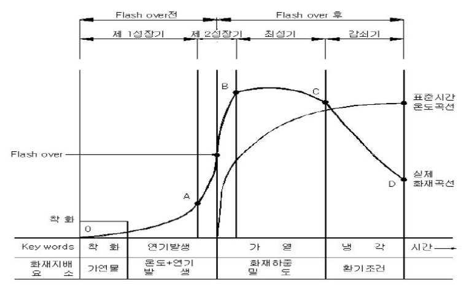
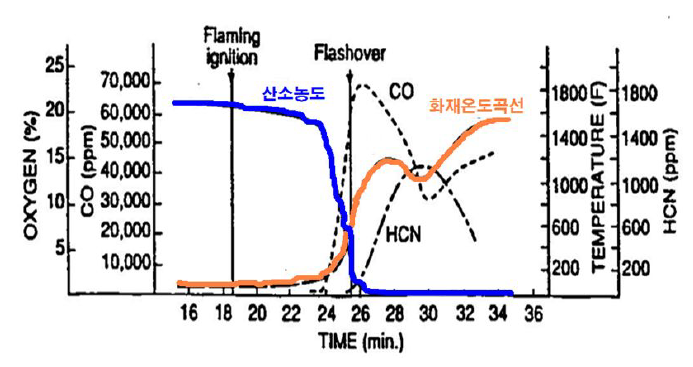
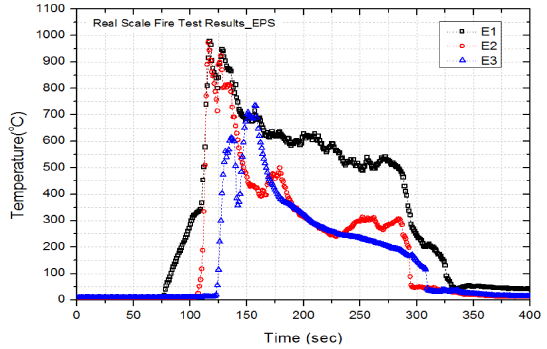

통상적으로 건물 화재온도성상은 (그림 1)과 같이 단계별로 성장합니다. 화재가 처음 출화원에 의해 가연물이 인화되면 화열이 서서히 상승하여 화재플륨(Fire plume: 떠있는 화염기둥)을 형성하고 벽과 천장재를 타고 올라가면서 1차적으로 연소시키고(출화기), 연소열은 실의 상부공간에 축적되어 집니다.

그림 1. 통상적인 건물화재 온도성상
이 상부 공간에 축적된 열은 고온 복사열을 아래 바닥부근으로 방출하여 2차적으로 바닥부근의 가연재를 연소시키며 온도상승을 가져오며(성장기), 연소확대가 지속되면 실내 화재로 인한 고온의 열에너지가 충만한 상태에서 실내압력이 증가하면서 일시적인 외부공기유입이 적어지고실내의 고온의 미연가스층이 외부로 밀려나가 발화하고 이때 유출된 미연가스량 만큼 신선한 공기가 실내 유입되어 내부고온의 미연가스와 혼합하여 일시에 연소하여 실내의 급격히 온도가 상승하는 과도연소현상을일으킨다. 이를 플래시오버(Flash over)라 합니다.
[그림 2]와 같이 이 때의 실내 상층부온도는 약 500℃이상에 이르며, 바닥면에서 재실자가 받는 복사열류량은 20kW/㎡로서 화상을 입는 최소 복사열류량인 4kW/㎡의5배에 이르고, 실내 공기중 산소량은 제로에 가깝게 떨어지며, 이산화탄소, 일산화탄소 등 유독가스가 급격히 증가합니다.

그림2. 통상적인 건물화재시 위험요소 변화 (D,W,Belles,1985)
제1성장기(출화기)를 지나 제2성장기, 최성기에 들어서면 화재실 내의총 방출열량은 실(室)의 개방된 문과 창 및 배기닥트의 크기 등 환기조건에 좌우되며 이 때를 환기지배형 화재라 부릅니다. 이후 최고조에 도달하여 실내 가연물의 총 연소열이 실외부로의 총 소실열과 일정시간 평형을 유지하다가(최성기), 실내 가연물이 소진되면 점차 온도가 급격히 감쇠하는(감쇠기) 현상으로 나타납니다.
따라서 초기 화재구간(출화기～성장기)에서 특히 플래시오버현상이 일어나기 전에 대피가 가능하도록 플래시오버발생을 최대한 억제하거나 지연시킬 수 있도록 실내마감 샌드위치패널의 연소열, 연기 및 유독가스의 발생이 최소화 되도록 샌드위치패널의 준불연 성능을 강화하여야 할 것입니다.
☞ 다음은 일반스티로폼(EPS) 샌드위치판넬의 실대형화재시험(실물화재시험) 온도변화를 실험한 결과입니다.
실험 시작 약 1분 30초에 Mockup모서리에서 화염이 출화되었고. 출화된 화염은 천장에서 급속히 확대되며 실험 시작 후 2분만에 플래시오버가 발생되어 더이상 시험을 진행할 수 없었습니다.

백색스티로폼(EPS) 패널 실물화재시험 온도변화
일반스티로폼패널(판넬)의 경우
시험시작 2분만에 플래시오버 발생
스티로폼(EPS)패널은
'준불연' 제품으로 선택해야
플래시오버 발생이 최대한 지연될 수 있을 것
대광 준불연 DK보드 판넬은
화재에 강하고
오랜 시간이 지나도
부식 걱정없습니다